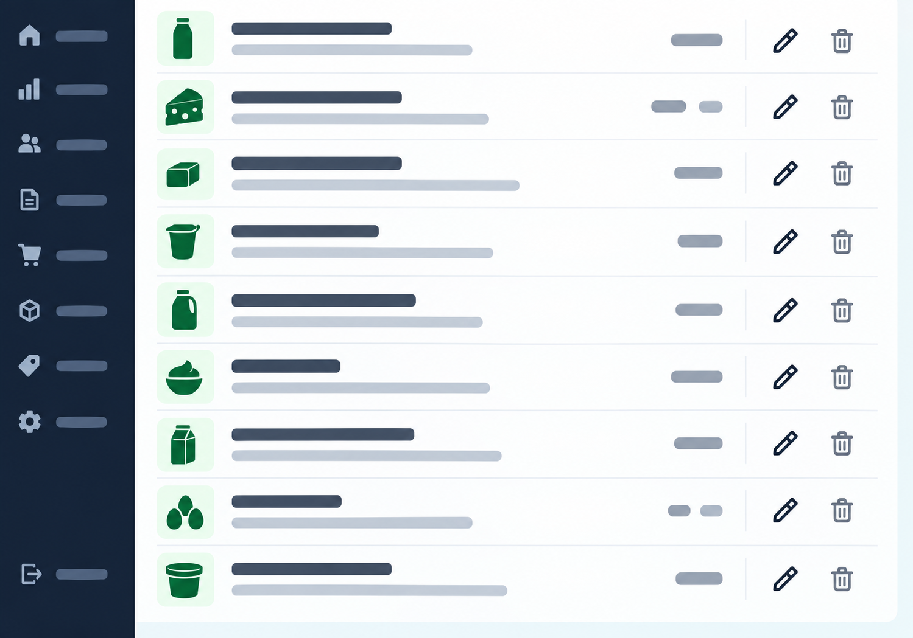
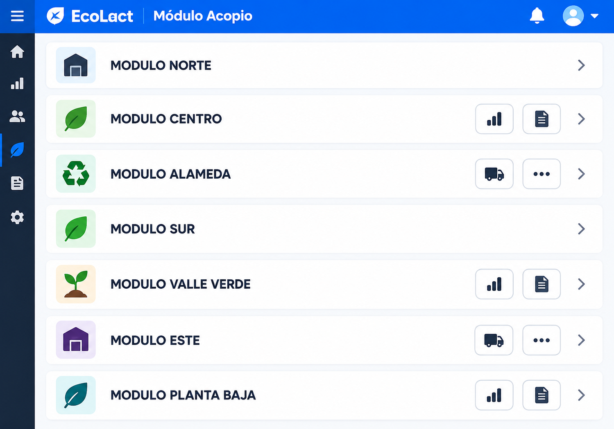

Módulos y funcionalidades del sistema
El panel del administrador de EcoLact está organizado en 11 secciones de navegación con 19 opciones visibles. Estas secciones agrupan las funciones para gestionar el acopio, la calidad, el personal, los pagos, la producción y la comercialización. No representan 11 aplicaciones independientes: cada rol dispone de las opciones que le corresponden.
Dashboard
- Inicio: resumen general de la operación.
- Asistencia: consulta del control de asistencia del personal.

Operación
- Acopio: registro y seguimiento de entregas.
- Proveedores: gestión e historial.
- Zonas: organización de zonas, rutas y recorridos.

Personal
- Trabajadores: administración del personal de EcoLact.
- Consulta de jornadas y correcciones de asistencia cuando corresponda.
Calidad
- Calidad: selección de muestras.
- Registro, revisión y confirmación de análisis.
- Lectura de tickets mediante OCR.
Configuración
- Parámetros de calidad: límites y reglas de evaluación.
- Configuración de pagos: condiciones de pago de proveedores y trabajadores.
Finanzas
- Caja: consulta de ingresos y egresos vinculados a operaciones.
- Pagos: obligaciones y comprobantes de proveedores y trabajadores.
Producción
- Recetas: insumos y requerimientos.
- Producción: inicio, seguimiento y finalización de lotes.
Inventario
- Insumos: compras, presentaciones y movimientos de stock.
- Productos: consulta de productos y existencias.
Ventas
- Ventas: registro, historial y comprobantes.
- Compradores: gestión de clientes comerciales.
Comunicación
- Comunicados: creación, publicación y consulta de avisos dirigidos a los usuarios.
Administración
- Auditoría: opción visible en el menú del administrador.
- Su alcance operativo debe confirmarse con la pantalla correspondiente.
Las tarjetas reproducen las secciones del menú del administrador; no son once subsistemas distintos. Por ejemplo, los recorridos y la identificación QR pertenecen a Operación → Acopio, mientras que la liquidación y el pago a proveedores forman parte de Finanzas → Pagos. El menú de otros roles muestra funciones diferentes.
Base de esta clasificación: menú administrativo mostrado en EcoLact y rutas web del repositorio. La opción «Auditoría» aparece en la interfaz proporcionada, aunque no se localizó una ruta web explícita con ese nombre en routes/web.php.